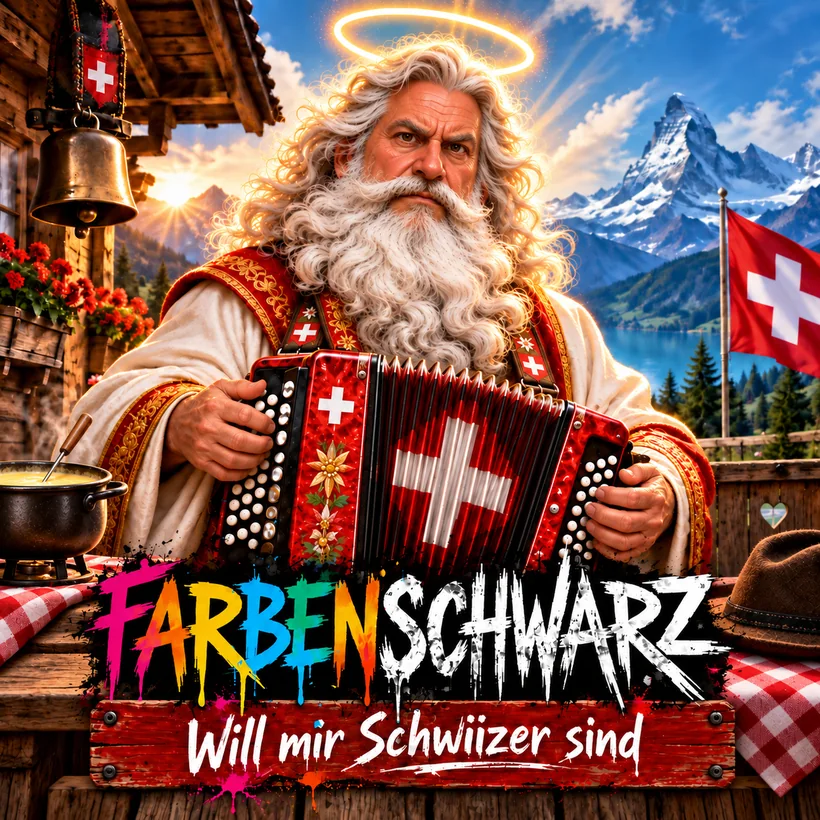
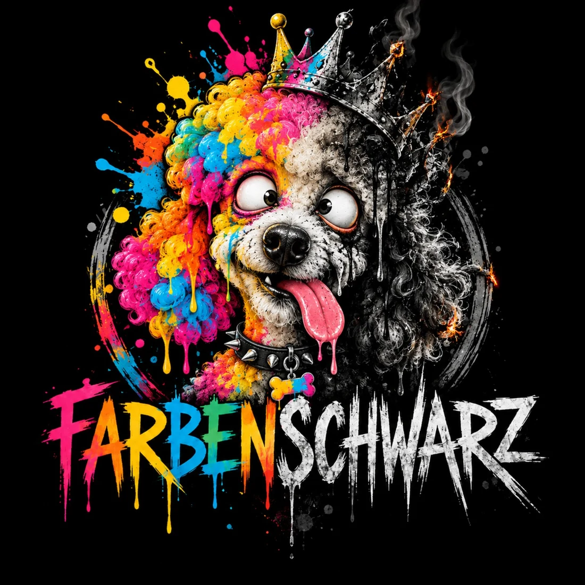
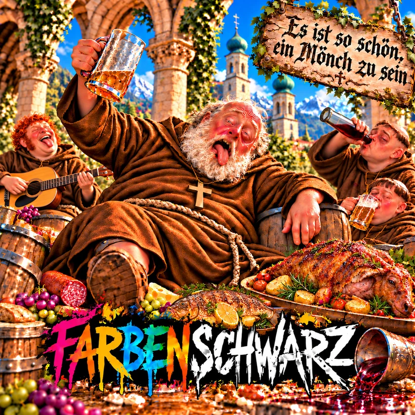
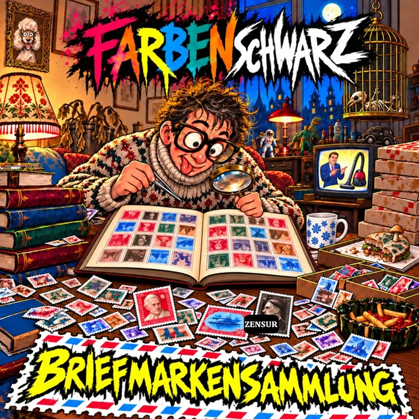
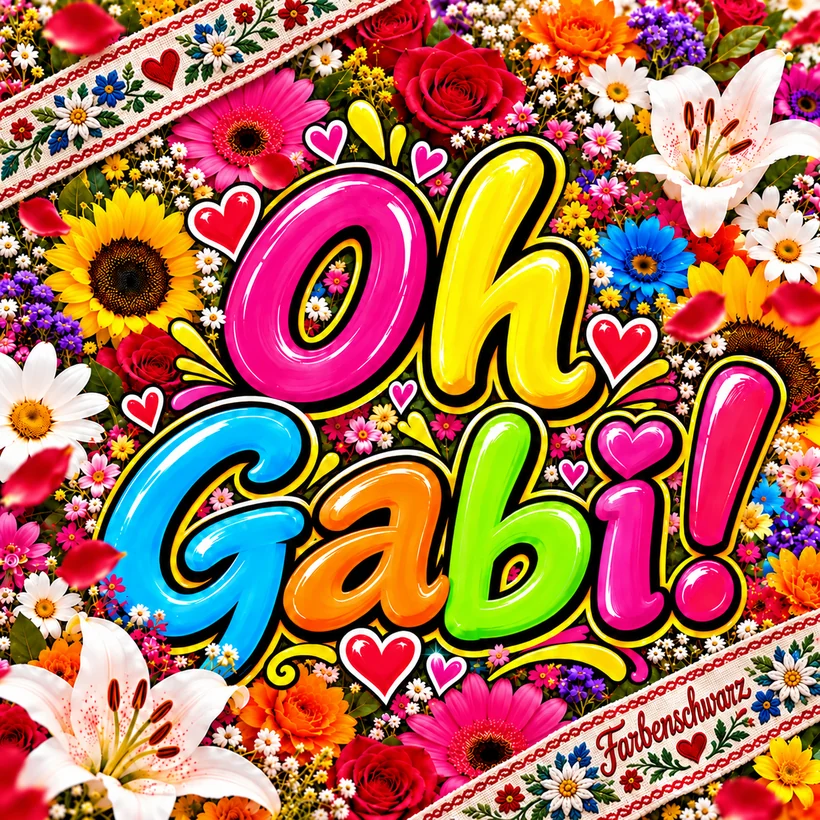

Schweizer Musikprojekt · Ungefragt seit 1997
Musik, die
keiner
bestellt hat.
Moritat, Rock, Country und andere Zwischenfälle. Farbenschwarz macht Musik für Menschen mit einer gewissen Leidensfähigkeit.

✳ Verfügbar auf allen Streamingdiensten. Leider. ✳
01 / Musikalische Vergehen
Die Beweisstücke
Vier Kostproben aus dem Farbenschwarz-Universum. Vier Originalcover in der amtlichen Beweismittelübersicht.



02 / Ungeniert online
Bitte nicht
drücken.
Farbenschwarz zum Anhören: Apple Music führt direkt zum Künstlerprofil. Bei Spotify und YouTube öffnen sich vorerst die Suchergebnisse.
Demnächst · In Arbeit
Das Leben ist hart.
Das erste grosse Farbenschwarz-Album nimmt Gestalt an. Neue Geschichten, vertraute Abgründe und gelegentlich Musik. Für 2027 geplant.
2027
03 / Unnötige Hintergrundinformationen
Was ist
Farbenschwarz?
Farbenschwarz ist ein Schweizer Satire-Musikprojekt mit Wurzeln im Jahr 1997. Es erzählt seltsame Geschichten, wechselt Genres nach Gutdünken und nimmt Musik erstaunlich ernst – sich selbst eher weniger.
Diese Website ist erst der Anfang. Später sollen hier Lieder, Texte, Hintergründe und viele ausgesprochen unnötige Details zu entdecken sein. Der Pudel wird dazu Stellung nehmen müssen.